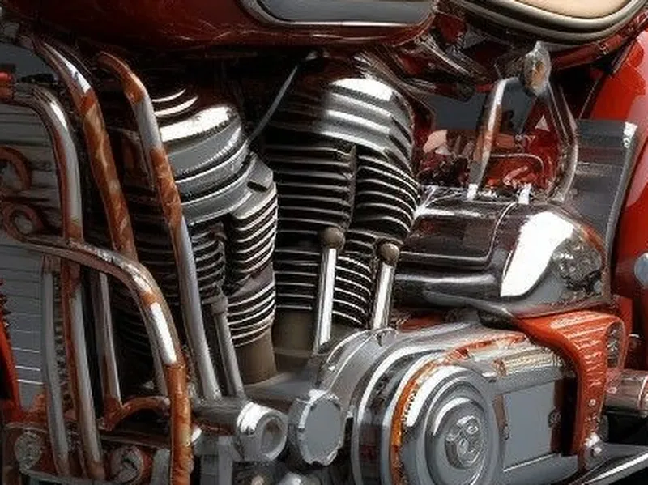
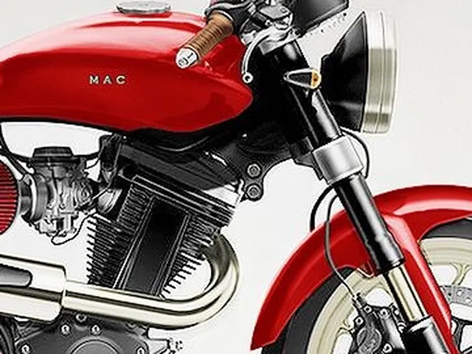
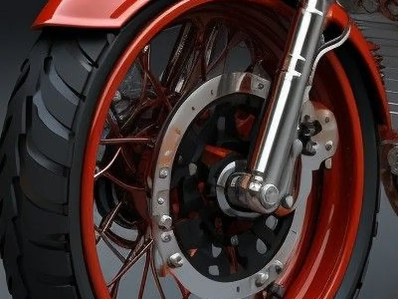
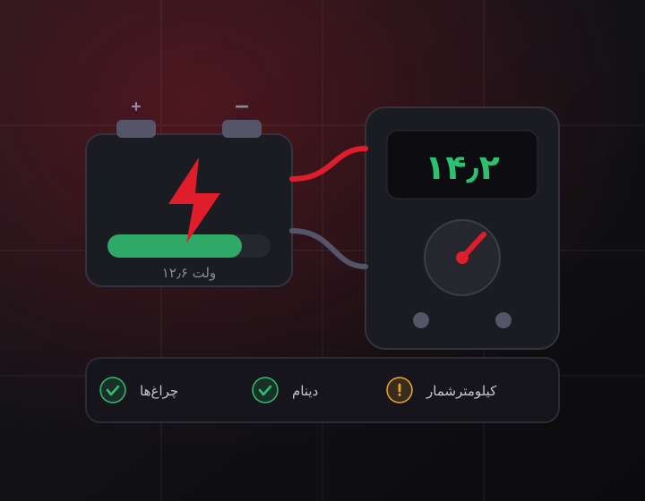
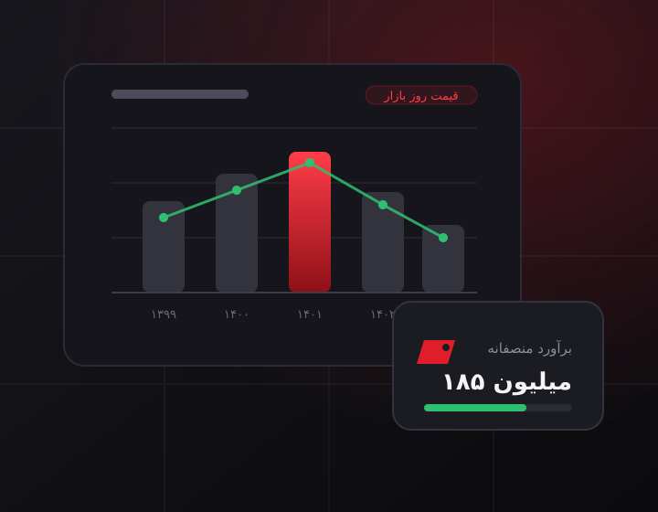

خدمات کارشناسی موتوسنج
هر موتورسیکلت در شش سرفصل تخصصی و بیش از ۶۰ مورد جزئی بررسی میشود؛ نتیجه، یک گزارش شفاف و قابل اتکاست.
شش سرفصل، بیش از ۶۰ مورد
در هر کارشناسی چه چیزهایی بررسی میشود؟
کارشناسی موتوسنج یک چکلیست مشخص و ثابت دارد؛ هیچ موردی به سلیقهی کارشناس واگذار نمیشود و همهی نتایج در گزارش نهایی ثبت میگردد.
سرفصل 1
بررسی فنی موتور و گیربکس
- تست کمپرس سیلندر و بررسی سلامت رینگ و سوپاپ
- گوش دادن به صدای موتور در دورهای مختلف و تشخیص تقتق و صدای زنجیر تایم
- بررسی رنگ و حجم دود اگزوز (نشانهی روغنسوزی یا بنزینسوزی)
- عملکرد کلاچ، سُر خوردن و درگیری صحیح دندهها
- بررسی نشتی روغن از واشر سرسیلندر، کارتل و کاسهنمدها
- وضعیت روغن موتور و فیلترها

سرفصل 2
بررسی بدنه، شاسی و رنگ
- اندازهگیری ضخامت رنگ و تشخیص رنگشدگی یا صافکاری
- بررسی شاسی از نظر جوشکاری، خمیدگی و ضربهخوردگی
- کنترل تقارن دوشاخ، تنه و ترکشات پس از تصادف
- بررسی اصالت قطعات بدنه و تعویضی بودن آنها
- وضعیت خط و خش، زنگزدگی و پوسیدگی

سرفصل 3
بررسی لاستیک، ترمز و تعلیق
- عمق آج و تاریخ تولید لاستیک جلو و عقب
- ضخامت لنت و سلامت دیسک ترمز (تاب و شیارافتادگی)
- عملکرد ترمز جلو و عقب و بررسی روغن ترمز
- سلامت کمکفنر جلو و عقب و نشتی روغن کمک
- بررسی سیستم ABS و CBS در صورت وجود
- لقی رولبرینگ فرمان و توپی چرخها

سرفصل 4
بررسی سیستم برق و باتری
- سلامت باتری، ولتاژ و توان استارت
- عملکرد دینام و شارژدهی در دور موتور
- چراغها، راهنما، بوق و کلیدها
- صحت کارکرد کیلومترشمار و احتمال دستکاری آن
- خواندن خطاهای ثبتشده در ECU موتورهای انژکتوری
- بررسی سیمکشی از نظر دستکاری و اتصالات غیراستاندارد

سرفصل 5
بررسی مدارک، اسناد و سوابق
- تطبیق شماره موتور و شماره تنه با سند و کارت
- بررسی سلامت و اصالت پلاک و کارت سوخت
- استعلام خلافی، توقیف و سوابق تصادف
- کنترل بیمهنامه و تاریخ اعتبار آن
- راهنمایی دربارهی مراحل و هزینههای تعویض پلاک

سرفصل 6
تحلیل قیمت و مشاورهی خرید
- برآورد قیمت منصفانه بر اساس وضعیت واقعی موتور
- مقایسه با قیمت روز بازار و نمونههای مشابه
- فهرست هزینههای تعمیراتی که در آیندهی نزدیک لازم میشود
- پیشنهاد سقف قیمت برای چانهزنی
- مشاورهی تلفنی رایگان پس از دریافت گزارش

تعرفهها
هزینهی کارشناسی
تعرفهها بر اساس نوع موتور تعیین میشود. تسویه پس از انجام کارشناسی و بهصورت حضوری است.
| نوع موتورسیکلت | موارد بررسی | مدت زمان | تعرفه |
|---|---|---|---|
| موتورسیکلتهای شهری و ایرانی (تا ۲۰۰ سیسی) | بیش از ۵۰ مورد | حدود ۴۵ دقیقه | تماس بگیرید |
| اسکوتر و موتورهای وارداتی سبک | بیش از ۶۰ مورد | حدود ۶۰ دقیقه | تماس بگیرید |
| موتورهای اسپرت و سنگین (بالای ۴۰۰ سیسی) | بیش از ۷۰ مورد | حدود ۹۰ دقیقه | تماس بگیرید |
| کارشناسی خارج از محدودهی تهران | مطابق نوع موتور | با هماهنگی | تعرفهی جداگانه |
برای اعلام تعرفهی دقیق، کافی است نوع موتور و محل آن را در یک تماس کوتاه به ما بگویید.
درخواست کارشناسی
همین حالا وقت بگیرید
ثبت درخواست فقط با یک تماس تلفنی انجام میشود؛ نه فرم آنلاینی در کار است، نه پیشپرداختی.
۰۹۱۲ ۳۴۵ ۶۷۸۹سوالی دارید؟ یک تماس کافی است
راهنمایی اولیه و برآورد هزینه، پشت تلفن و رایگان است.